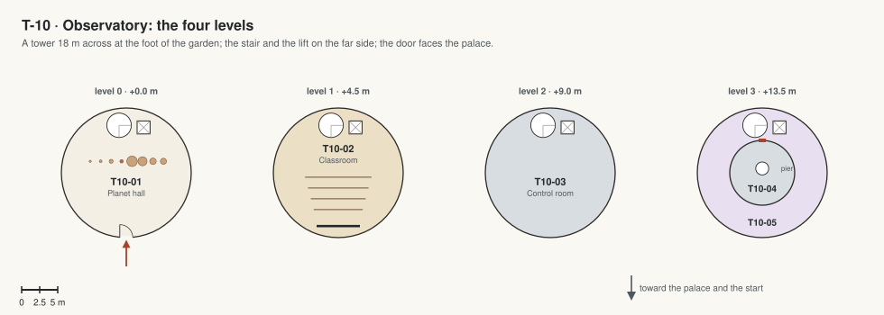

T-10 · Observatory
A tower at the foot of the garden domes on the palace's axis, with a telescope dome on top; links to the lowest garden dome and to the pod terminal.

| Code | Room | What it is for | Size |
|---|---|---|---|
| T10-01 | Entrance and planet hall | Ground floor, in from the lowest garden dome and the link to the pod terminal: models of the planets to scale, a lit globe of Mars, the stair and the lift up. | 250 m² |
| T10-02 | Astronomy classroom | First floor: 20 seats, a screen, star charts. | 250 m² |
| T10-03 | Control room | Second floor: the telescope's computers and the camera screens. | 250 m² |
| T10-04 | Telescope dome | Top: a 1 m telescope under a dome 9 m across that opens and turns. | 64 m² |
| T10-05 | Viewing deck | A ring round the dome behind radiation glass: Earth and the Moon as evening stars, Phobos and Deimos. | 190 m² |